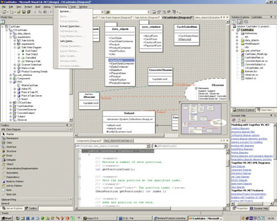
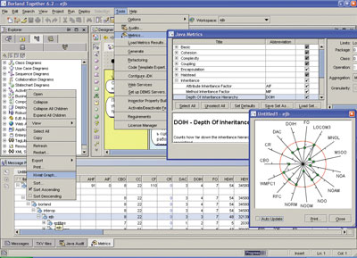
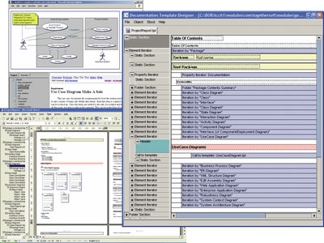
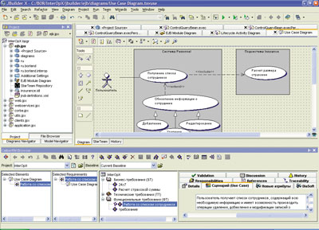

Сергей Орлик, Наталия Елманова
Когда речь заходит о разработке ПО, многие потребители программных средств имеют в виду в первую очередь написание кода приложений, в лучшем случае - еще и внедрение созданных программ. Подобная точка зрения во многом опирается на опыт, который многие из нас получили в начале 90-х годов, в период стихийной и часто совершенно неуправляемой автоматизации российских предприятий. Именно в это время в России было довольно много разработчиков, которые, будучи "мастерами на все руки", сами вели переговоры с заказчиками, проектировали приложения, писали код, готовили проектную документацию, тестировали и внедряли продукт, нередко и сопровождая рабочие станции пользователей (авторы и сами такими были…).
Хотя подобных разработчиков-универсалов, равно как и компаний, исповедующих принцип "одна задача - один исполнитель", в России и сегодня осталось немало, нельзя не заметить, что в целом подавляющее большинство компаний, даже относительно небольших, все чаще предпочитают специализацию и рассматривают разработку ПО как процесс. Это неудивительно - для успешной реализации современных проектов требуется весьма широкий набор знаний и умений, которыми, как правило, обладают разные специалисты, соответственно выполняющие в проекте разные функции (или, как принято говорить, роли). В свою очередь, предсказуемость результата разработки ПО (в терминах бюджета, ресурсов, сроков и качества) достигается только при отношении к нему как к любому другому проекту, т. е. требует традиционных практик менеджмента, прежде всего практик управления проектами.
Другая задача, с которой часто сталкиваются менеджеры, отвечающие за проекты разработки ПО, состоит в том, чтобы разрушить барьеры между бизнес-аналитиками, которые "повернуты лицом" к пользователям (и оперируют соответствующими бизнес-терминами), и ИТ-специалистами (архитекторами, разработчиками, тестировщиками, инженерами по эксплуатации), которые пользуются собственным "глоссарием". В отсутствие единого процесса, охватывающего и аналитиков, и разработчиков, и, безусловно, менеджеров, результаты интервьюирования пользователей, анализа бизнес-процессов и иной деятельности бизнес-аналитиков часто превращаются просто в красивые документы, имеющие мало общего с создаваемыми прикладными системами и обреченные пылиться на полках менеджеров, как только будут подписаны соответствующие акты, подтверждающие успешное окончание работ.
Этапы создания ПО
Заметим, что практически любая современная методология разработки ПО, будь то RUP (Rational Unified Process), MSF (Microsoft Solution Framework) и даже методология экстремального программирования, предполагает разбиение всего проекта (или какой-либо его части, например, очередной итерации проекта) на этапы, на которых обладатели неких ролей выполняют различные действия и производят различные составные части проекта. Даже безотносительно к применяемой методологии можно выделить как минимум такие этапы: бизнес-анализ и определение требований; анализ требований и проектирование; разработка; тестирование и оценка качества; документирование; внедрение и сопровождение. Рассмотрим эти этапы более подробно.
Предпроектное обследование и определение требований
За этот этап обычно отвечают бизнес-аналитики, которые проводят предпроектное обследование, общаясь с заказчиком и потенциальными пользователями и выясняя их проблемы и потребности. В результате этого этапа формируется набор требований, оформленный в виде документа (в нашей стране такой документ обычно называется техническим заданием или техническими условиями). Хотя многие специалисты ограничиваются просто фиксированием требований в Microsoft Word (в лучшем случае с программными "надстройками" к нему), необходимость многопользовательской работы, отслеживания связей (traceability) между различными категориями требований (например, бизнес-требованиями и атрибутами качества, функциональными требованиями и характеристиками пользовательского интерфейса и т. п.), контроль версий требований и другие аспекты, определяемые самой дисциплиной Requirement Management, заставляют все же применять для управления требованиями специализированный инструментарий. Соответствующие средства позволяют хранить структурированный и систематизированный список требований к продукту в какой-либо базе данных и обращаться к нему на последующих этапах, связывая требования с реализующими их составными частями продукта и тестами, проверяющими их выполнение, а также корректно отслеживать изменения в требованиях (они, как правило, есть всегда) и их влияние на результаты последующей работы. Из наиболее известных на сегодняшний день средств управления требованиями стоит отметить RequisitePro (IBM/Rational), DOORS (Telelogic), CaliberRM (Borland).
Помимо собственно текста требований, бизнес-аналитики нередко создают набор моделей, позволяющих лучше понять требования к продукту. Эти модели бывают самыми разнообразными. Во-первых, они могут описывать имеющееся состояние бизнес-процессов, которые предполагается автоматизировать (такие модели носят название AS IS - "как есть"), и то состояние бизнес-процессов, к которому они должны эволюционировать после внедрения продукта (модель TO BE - "как должно стать"). Во-вторых, модели могут отличаться способами описания бизнес-процессов, составных частей проекта и взаимодействия с ними пользователей. В этой связи стоит упомянуть унифицированный язык моделирования UML (Unified Modelling Language), который поддерживается многими ведущими инструментами бизнес-моделирования, включая Rational Rose, Borland Together, Microsoft Visio (подробную информацию о стандарте языка UML можно найти на сайте консорциума Object Management Group, http://www.omg.org).
Из диаграмм, наиболее часто включаемых бизнес-аналитиками в модели, создаваемые на этапе предпроектного обследования, следует в первую очередь назвать Use Case-диаграммы (сценарии взаимодействия пользователя с продуктом с точки зрения пользователя); диаграммы последовательностей, описывающие порядок передачи сообщений от одних объектов к другим; диаграммы кооперации, описывающие взаимодействие объектов друг с другом; а также диаграммы деятельности, описывающие потоки работ и изменение состояний объектов.
Зачем нужны модели, созданные на этапе определения требований? Во-первых, они нередко упрощают понимание требований тем, кто читает описывающий их документ (и заказчикам, и разработчикам), - как минимум, за счет более наглядного представления процессов, нежели в текстовом описании. И, во-вторых, они служат тем исходным материалом, на котором базируется дальнейшее проектирование приложения. При этом диаграммы не "повисают в воздухе", а выступают как важный иллюстративный материал к требованиям. Например, Use Case по природе своей - это сценарий взаимодействия пользователя с системой с точки зрения пользователя. Такой сценарий описывается изначально в текстовом виде как сочетание ролей, предусловий, постусловий и действий как таковых (существуют разные шаблоны Use Case, в данном случае перечислены наиболее часто используемые атрибуты). Этот сценарий заносится в список требований как ключевая характеристика соответствующего функционального требования, а UML-диаграмма Use Case используется для визуализации описанного таким образом требования.
Очень важно отметить, что современные инструменты моделирования - это отнюдь не просто средства создания иллюстраций для технического задания. С моделями, созданными бизнес-аналитиками, в дальнейшем работают другие участники проекта, используя их и для генерации кода, и для подготовки проектной документации, и для выработки планов тестирования, и для контроля качества созданного приложения. Иными словами, модель связывает бизнес-аналитиков и заказчиков с участниками проекта, которые непосредственно занимаются его реализацией. И средства моделирования и проектирования на основе UML - это как раз то самое "оружие" менеджеров, которое помогает наладить взаимодействие аналитиков и разработчиков, обеспечивая их общими средствами выражения, общим "языком".
Анализ требований и проектирование
Этап проектирования следует за этапом определения требований, и ведут его, как правило, архитекторы приложений и системные аналитики. На этом этапе принимаются решения относительно архитектуры и составных частей создаваемого решения, выбираются технологии для его реализации. Результатом этого этапа обычно становится документ, называемый техническим проектом.
Обычно на этапе проектирования к модели, созданной бизнес-аналитиками, добавляются диаграммы компонентов и классов создаваемых приложений и диаграммы развертывания создаваемого решения, а некоторые из уже созданных диаграмм модифицируются.
Диаграммы классов разработчики могут затем изменять в ходе создания кода приложения. Иногда на последующих этапах вносятся изменения и в диаграммы развертывания, но это, к счастью, случается не так часто.
Отметим, что современные средства моделирования позволяют применять шаблоны проектирования, что во многом упрощает проектирование и разработку часто встречающихся компонентов решений, а также разработку компонентов или даже целых проектов с заранее заданными свойствами.
На этом же этапе при необходимости создается логическая модель данных, содержащая диаграммы "сущность-связь". На ее основе генерируется физическая схема данных для конкретной СУБД, выбранной для реализации проекта. Правда, это обычно делается не средствами UML - для решения таких задач существует нотация IDEF1X и инструменты, реализующие поддержку этого стандарта (наиболее популярны среди них продукты компаний Sybase, Computer Associates, Embarcadero).
Разработка продукта
На этапе собственно разработки создается код приложения в соответствии с техническим проектом, в том числе и серверный код, реализующий функциональность, отсутствующую в модели данных. Отметим, что и на этом этапе весьма активно может применяться моделирование - практически все современные средства UML-моделирования могут генерировать код на разных языках программирования (этот процесс носит название forward engineering), а некоторые из них могут выполнять и обратное проектирование (reverse engineering), создавая диаграмму классов на основе готового приложения.
Технология Borland LiveSource и сами продукты семейства Borland Together (в которых эта технология впервые появилась) позволяют не думать о вопросах синхронизации кода и моделей, обеспечивая непосредственную работу с кодом, представленным в виде соответствующих UML-диаграмм. Кроме того, прямая работа с кодом позволяет естественным образом интегрировать в среду разработки не только средства UML-проектирования, но и инструменты рефакторинга, как это сделано, например, в новой версии Borland Together Edition for Visual Studio .NET 2.0 (рис. 1).
|  |
| Рис. 1. Синхронное изменение кода и модели, в том числе средствами рефакторинга, в Borland Together for Visual Studio .NET 2.0.
|
Возможность синхронного изменения кода и модели существенно упрощает многие процессы, сопровождающие собственно разработку. Во-первых, не требуется вручную восстанавливать модель на основе уже созданного кода для того, чтобы создать проектную документацию, отражающую реальное положение вещей. Во-вторых, модель уже созданного решения можно повторно использовать в других проектах (в том числе с определенными модификациями), и в этом случае собственно код можно сгенерировать для другого языка программирования, средства разработки или даже для другой платформы.
Следует упомянуть и еще один подход к применению UML-моделей при разработке приложений, а именно технологию MDA (Model Driven Architecture - архитектура, управляемая моделью). Данная технология позволяет создавать в приложении классы, поведение которых зависит от UML-модели и меняется при внесении изменений в модель, т. е. не требуется вносить изменения собственно в код приложения (подобная технология реализована в ряде средств разработки компании Borland).
В любом случае средства моделирования, обладающие указанными качествами, будут крайне полезны разработчикам, поскольку вполне способны избавить их от некоторого количества рутинной работы.
Тестирование и оценка качества
Выше мы уже отмечали, что план тестирования создается на основе требований к продукту - ведь именно соответствие продукта требованиям и проверяется при тестировании. Однако и здесь наличие модели может существенно облегчить работу специалистов по тестированию. Сценарии взаимодействия пользователей с системой, описанные в модели на этапе бизнес-анализа, выполняются при тестировании пользовательских интерфейсов, функциональном тестировании (кстати, основанном на соответствующих требованиях), и здесь уже описываются как сценарии тестирования в соответствующих инструментальных средствах тестирования (например, Mercury TestDirector и т. д.).
Помимо тестирования - а сомнений в его необходимости уже, похоже, никто не испытывает, - в последнее время немалое внимание стало уделяться оценке качества кода. Критерии оценки качества достаточно разнообразны, но существует некоторое количество общепринятых критериев, например, связанных со стилем написания кода или проектирования иерархии классов. Именно от результатов контроля качества кода обычно зависит принятие решений о проведении рефакторинга.
Коль скоро многие средства моделирования уже обладают средствами разбора кода приложений, вполне разумным представляется дополнительно реализовать в них и средства аудита кода - как это, собственно, уже и сделано в некоторых продуктах (рис. 2).
|  |
| Рис. 2. Оценка качества кода приложения с использованием аудита и метрик Borland Together Control Center 6.2.
|
Документирование
То, что диаграммы, созданные при моделировании, облегчают понимание документов, достаточно очевидно - так уж устроено человеческое восприятие. Однако помимо собственно диаграмм, средства моделирования позволяют создавать разнообразные отчеты по моделям и включать их в проектную документацию, а это во многом упрощает процесс подготовки документации, делает его менее утомительным и скучным. Отметим, что чем аккуратнее велась работа над моделью, тем проще создавать проектную документацию. С другой стороны, модель может содержать практически все, что требуется отразить в документации, причем не только в руководстве системного администратора или администратора баз данных, но и в руководстве пользователя. Например, и CaliberRM, и Borland Together позволяют создавать сквозную документацию (как и отдельные документы) в соответствии с шаблонами и регламентами, настроенными с учетом специфики данной организации, используемой методологии или проекта (рис. 3).
|  |
| Рис. 3. Настройка шаблона автоматической генерации документации в Borland Together и варианты представления полученной документации в форматах HTML и RTF.
|
Внедрение и сопровождение
На этапе внедрения продукта специалисты по внедрению обычно пользуются диаграммами развертывания, созданными системными аналитиками на этапе проектирования приложения. Что касается этапа сопровождения, практика показывает, что на этом этапе специалистам по сопровождению продукта может понадобиться практически все, что было создано в ходе работы над проектом, в том числе и код, и все созданные модели. Особенно актуально применение моделей в том случае, когда на этапе сопровождения выявляется необходимость доработки продукта. К процессу доработки привлекают и аналитиков, и специалистов по тестированию, и авторов кода, и если они обменивались моделями в процессе создания приложения, то и в процессе доработки им стоит продолжать это делать.
Коллективная разработка приложений
Поскольку модели могут применяться практически всеми участниками проекта и подвергаться постоянным изменениям, достаточно серьезной оказывается проблема управления версиями одной и той же модели. Именно поэтому современные средства моделирования, как правило, обладают механизмами интеграции со средствами управления изменениями и средствами контроля версий, что, в свою очередь, позволяет коллективу участников проекта корректно применять одну и ту же модель.
Кесарю - кесарево…
Мы видим, что современные средства моделирования можно использовать на всех этапах жизненного цикла разработки приложений - от определения требований до внедрения и сопровождения продукта. Однако, как мы убедились, разным участникам проекта требуется разный набор функций. Например, если бизнес-аналитику в принципе не нужны средства интеграции инструментов моделирования со средами разработки, то разработчику в первую очередь необходимы именно они. Средства контроля качества кода нужны специалистам по качеству и разработчикам, но вряд ли потребуются аналитикам. Поэтому современные средства моделирования обычно выпускаются в нескольких редакциях, предназначенных для обладателей разных ролей в проекте. Например, редакция Together Solo, ориентированная на бизнес-аналитиков, не обладает средствами интеграции со средами разработки, но позволяет создавать диаграммы основных типов, полностью совместимые по формату со старшей версией - Together Control Center (с которой чаще всего работают архитекторы) и с редакциями Together для JBuilder, Visual Studio, Eclipse/IBM WebSphere и т. д.
Потребность в тесной интеграции средств управления требованиями, инструментов проектирования, сред разработки и систем конфигурационного управления и отслеживания изменений (SCCM - Software Configuration & Change Management), по сути, привела к тому, что на рынке стал появляться новый класс программных продуктов категории Enterprise Studio, объединяющий и интегрирующий такого рода средства в рамках единой среды (рис. 4).
|  |
| Рис. 4. Borland Enterprise Studio for Java - встроенная интеграция CaliberRM и Together в среду JBuilderX с возможностью связывания требований и диаграмм.
|
***
Итак, моделирование - это средство объединения разработчиков, повышающее эффективность работы всей команды, упрощающее взаимодействие с заказчиками и облегчающее работу над последующими проектами. Грамотное применение моделирования приложений может сэкономить тысячи человекочасов утомительного труда, которые можно вместо этого потратить на создание новых продуктов или реализацию интересных идей.
Можно ли обойтись без моделирования? Да, можно. Можно ли обойтись без управления требованиями? Вероятно, тоже можно. Сможете ли вы уложиться в сроки и бюджет, не урезав необходимой функциональности и удовлетворив пользователей? Решать вам.